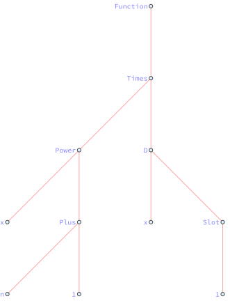
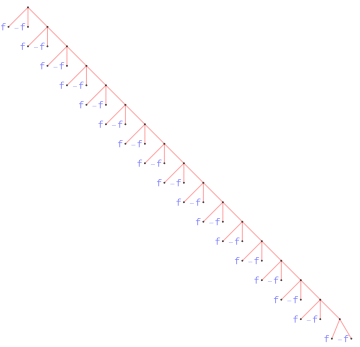

Expression and evaluation I The standard evaluation sequence
References:
-
Mathematica documentation:
tutorial/Evaluation,tutorial/EvaluationOfExpressions- Introduction to the standard evaluation sequence.
-
Working with unevaluated expressions
- Demonstrating situations in which evaluation control is important, pointing out common pitfalls and providing useful tools and techniques along the way.
Materials:
Moduli
It's convenient to treat a collection of similar objects as a unity, the properties of which reveal the relations between specific objects. Sometimes, the collection itself admits "nice" geometric structures, and we call it the moduli space.
Borrowing the idea of differential geometry, a curve in the moduli represents an one parameter family of objects, aka, finite deformation, and the tangent space contains independent directions of infinitesimal deformations. A typical example is the moduli space of Narain CFTs6: tangent vectors correspond to exactly marginal operators, and measures correspond to ensembles of CFTs.
In the following we will review the evaluation of expressions in Mathematica by ANALOGY with the moduli space.
| Expr | Moduli |
|---|---|
expression x0 |
point \(x_{0}\) |
rule x0->x0+f0 |
tangent vector \(f_{0}\) at \(x_{0}\) |
pattern x_:>x+f(x) |
vector field \(f(x)\) |
pattern condition x_/;Q[x]==0 |
constraint \(Q(x)=0\) |
evaluation x0->x1->...->xn |
flow from \(x_{0}\) to \(x_{n}\) |
| standard evaluation sequence | a special flow |
| complexity | potential |
| neighborhood/locality | ?1 |
Expression
本节回顾 Mathematica 的表达式，记所有符合语法的表达式构成的集合2为 Expr。在 Mathematica 中不存在明确的类型系统，一切对象皆为表达式 (expression)4。
表达式的结构可表示为树 (tree)，函数 TreeForm3 给出表达式的树形式。可用 Head, Level, Position, Part, Span, Length, Depth 等函数访问表达式的内部结构。此外，函数 LeafCount 给出树的节点 (node) 或称叶子的总数，因此提供了一种表达式复杂度的度量。
原子： 与树的结构相似，不存在非平凡子表达式的称为原子 (atom)，例如数、符号、字符串。
复合： 树可以拼接，若干表达式可以复合为复杂度更高的表达式，此处复合 (composite) 指树的拼接，形如 f0[f1,f2,...]，类似于 operad5。
合成： 树构成森林，对应于合成 (compound)，形如 f1;f2;...，类似于张量积。
举例说明上述介绍，Witt 代数的生成元 \(L_n=x^{n+1} \p_x\) 可写为如下的纯函数，
L[n_]:=(x^(n+1) D[#,x])&;
作用在函数 \(f(x)\) 上 L[n]@f[x]， 给出 \(x^{n+1} f'(x)\)。\(L_{n}\) 的树形式为 L[n]//TreeForm。

Evaluation
表达式的集合 Expr 是一个无结构的平凡集合。对表达式的计算 (evaluation) 可实现表达式之间的形变 (deformation)。当然，计算类似于离散动力系统，此处并无良好定义的微分结构。
特定对象 \(x_0\) 的不同无穷小形变可记为 \(x_0 \mapsto x_0 + \d_i x_0,\, \d_i x_0\in TM_{x_0}\)，例如有效作用量的形变为
形变切方向的类似物即为规则 Rule (->)。表达式的子表达式的集合可以实现为
subExpression
subExpression//Attributes={HoldFirst};
subExpression[expr_,wrapper_:HoldForm,opts:OptionsPattern[]]:=
Cases[Unevaluated@expr,
subexpr_:>wrapper@subexpr,
{0,Infinity},
FilterRules[{opts},Options[Cases]],
Heads->False
];
例如 expr0=f[g[h]] 的子表达式为，
expr0=f[g[h]];
list=subExpression[Evaluate@expr0]//ReleaseHold
Out[]= {h,g[h],f[g[h]]}
由于 Expr 过大，将其简单截断为 exprlist={x,y}。改变表达式 expr0 的规则的集合可以实现为
exprlist={a,b};
rulelist=Outer[Rule,list,exprlist]//Flatten
Out[]= {h->a,h->b,g[h]->a,g[h]->b,f[g[h]]->a,f[g[h]]->b}
函数 Replace[expr,rule] 会搜索 expr 中匹配 rule 的子表达式并进行替换，可实现表达式的形变，expr0 的全部形变为1
Replace[expr0,#,{0,Infinity}]&/@rulelist
Out[]= {f[g[a]],f[g[b]],f[a],f[b],a,b}
如想仅替换 g->a 需启用 Replace 的选项 Heads->True，此时 Replace 会匹配表达式中的 Head 部分。但如想实现替换 f[g]->a 需要引入含有模式的延迟规则 f[g[x_]]:>a[x]，此处模式 x_ 用局部变量 x 指代 Expr 中的任意一个表达式，类似于 \(\forall x\in M\)。
Replace parts of the expression
Replace[expr0,g->a,{0,Infinity},Heads->False]
Replace[expr0,g->a,{0,Infinity},Heads->True]
Out[]= f[g[h]]
Out[]= f[a[h]]
Replace[expr0,f[g]->a,{0,Infinity},Heads->True]
Replace[expr0,f[g[x_]]:>a[x],{0,Infinity}]
Out[]= f[g[h]]
Out[]= a[h]
模式 Pattern[name,patt] 提供了全称量词的类似物，含有模式的延迟规则 patt:>target 可作用到 Expr 中的每一个表达式上。类似于矢量场 \(f(x)\) 在 \(M\) 的每点指派无穷小形变。
需要指出的是，赋值函数 Set (=), SetDelayed (:=), UpSet (^=), UpSetDelayed (^:=) 等的作用是在 Mathematica 的全局规则库中添加用户指定的规则。例如 f[x_]:=x 实际上是指定了符号 f 的下值 DownValues，
f[x_]:=x;
f//DownValues
Out[]= {HoldPattern[f[x_]]:>x}
Standard evaluation
在计算时，Mathematica 会遍历表达式 expr=f0[f1,f2,...] 的子结构，比对规则库进行模式匹配，重复这一步骤直到表达式的形式不变，即收敛到不动点，称之为标准计算序列 (standard evaluation sequence)：
- 计算表达式的
Head[expr]=f0； - 依次计算子表达式
f1,f2,...； - 应用符号的属性 (attribute)；
- 应用用户定义进行计算，即利用规则进行替换；
- 应用内置定义进行计算；
- 重复上述步骤，直到表达式不再变化或溢出。
可类比为矢量场的 flow 收敛到不动点或发散。后者例如递归溢出，
Block[{$RecursionLimit=20,f},
f:=-f;
Trace[f,f]
]//ReleaseHold
给出如下错误信息
$RecursionLimit::reclim2: Recursion depth of 20 exceeded during evaluation of -f.
Out[]= {f,-f,{f,-f,{f,-f,{f,-f,{f,-f,{f,-f,{f,-f,{f,-f,{f,-f,{f,-f,{f,-f,{f,-f,{f,-f,{f,-f,{f,-f,{f,-f,{f,-f}}}}}}}}}}}}}}}}}

Non-standard evaluation
计算依赖规则之间的顺序，类似于不同的矢量场不交换。因此选取合适的规则顺序方可得到目标表达式。标准计算序列在特定场景并不合适，例如上面的子表达式一例中，如果去掉 Hold 相关的部分，结果为
subExpressionUnhold[expr_]:=
Cases[expr,_,{0,Infinity}];
f=g;
subExpressionUnhold[f[1+1]]
subExpression[f[1+1]]
Out[]= {2,g[2]}
Out[]= {1,1,1+1,f[1+1]}
这是因为在执行标准计算时 subExpressionUnhold 不具有 OwnValues，因此计算 f=g，再计算 g[1+1]=g[2]，最后计算 subExpressionUnhold[g[2]]={2,g[2]}。而带有 HoldFirst 属性的 subExpression 会保持输入 f[1+1] 不变，直接匹配 subExpression 的下值。
Mathematica 提供了若干调整计算顺序的内置函数，此时称之为非标准计算 (non-standard evaluation)，例如
-
Holdfamily:Names["System`*Hold*"]Out[]= {Hold,HoldAll,HoldAllComplete,HoldComplete,HoldFirst,HoldForm,HoldPattern,HoldRest,NHoldAll,NHoldFirst,NHoldRest,ReleaseHold,SequenceHold,$ConditionHold} -
Evaluatevs.Unevaluated: only effect the most outer level Inactive, Inactivate, Activate, IgnoringInactive: inactivate centain symbols as if with no definitions.Verbatim: used in matching rules themselves.
在下一篇中，我们会着重讲解这些非标准计算函数的应用。
-
Neighborhood: why use
Plusinx0->x0+f0since there is no notion of linearity? How to tell whether two expressions are close enough? In this example,f[g[a]]is certainly closer tof[g[h]]thanf[a], and how to elaborate? (May with the help of the topology of expression trees?) ↩↩ -
The "size" of Expr is controlled by two objects: the collection of valid trees and the collection of node indices. Nodes can be atomic or non-atomic, e.g.
f[x]vs.(f+g)[x]. ↩ -
or the functions
ExpressionTreeandExpressionGraph, see the Mathematica documentation:guide/Trees. ↩ -
At the core of the Wolfram Language is the foundational idea that everything - data, programs, formulas, graphics, documents - can be represented as symbolic expressions. And it is this unifying concept that underlies the Wolfram Language's symbolic programming paradigm, and makes possible much of the unique power of the Wolfram Language and the Wolfram System.
-- Mathematica documentation:
guide/Expressions↩ -
Alexander Maloney and Edward Witten. Averaging over Narain moduli space. JHEP, 10:187, 2020. arXiv:2006.04855, doi:10.1007/JHEP10(2020)187. ↩